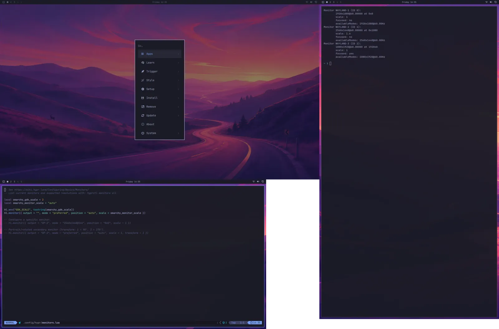

<style>
/* /develop: for people building on Omarchy, and changing Hyprland or Omarchy itself */
.dev { display: grid; gap: 14px; grid-template-columns: minmax(0, 1fr); }
@media (min-width: 900px) { .dev { grid-template-columns: repeat(2, minmax(0, 1fr)); } }
.dev .card .in { gap: 12px; }
.dev .who, .mons .who { font: 500 11.5px var(--mono); letter-spacing: .12em; text-transform: uppercase; color: var(--muted); }
.dev ul, .mons ul { margin: 0; padding-left: 18px; display: grid; gap: 7px; color: var(--ink-2); font-size: 15px; }
.dev .lead2, .mons .lead2 { --fc: var(--brand); }
/* every desk you don't have: the three-monitor shot beside its commands */
.mons { display: grid; gap: 14px; grid-template-columns: minmax(0, 1fr); }
@media (min-width: 1080px) { .mons { grid-template-columns: minmax(0, 1.2fr) minmax(0, .8fr); align-items: start; } .mons > figure { position: sticky; top: 84px; } }
.mons .card .in { gap: 12px; }
.mons figure { margin: 0; }
.mons img { display: block; width: 100%; height: auto; }
.mons .ways { display: grid; gap: 14px; }


</style>
<main class="wrap">
  <section class="page">
    <div class="head">
      <p class="tag">Develop</p>
      <h1>Build for Omarchy in a box, <span class="hl">not on your desktop.</span></h1>
      <p class="lead">For people writing shell plugins, themes and apps for Omarchy, and for people changing Hyprland or Omarchy
        itself. You, or the agent you work with, test on a real Omarchy desktop that isn't the one you are using.</p>
    </div>

    <div class="grp" id="monitors">
      <h2>Every desk <span class="hl">you don't have</span></h2>
      <p class="lead">A box can have as many monitors as a test needs, each with its own size, scale and place, and a bar on
        each: a portrait screen beside an ultrawide, mixed scales, a laptop with a monitor plugged in. Add and unplug them while
        the box runs, and see what your plugin or app does.</p>
      <div class="mons">
        <figure class="card cut lead2"><div class="in">
          
          <figcaption class="caption">One box, three monitors: 1920x1080, a 2560x1440 one at scale 1.6 below it and a portrait
            1080x1920 beside them. Taken in the box with <code>omabox shot</code>.</figcaption></div></figure>
        <div class="ways">
          <div class="card cut"><div class="in"><p class="who">Monitors</p><h3>Any size, scale and place</h3>
            <p>Each monitor goes right of or below the one before, or at the place you give it. <code>remove</code> is an
              unplug: its workspaces move to the others. <code>shot</code> takes the whole layout or one monitor,
              <code>peek --monitor</code> watches one, and clicks and waits work across all of them.</p>
            <pre class="code"><span class="p">$ </span>omabox up --monitor 1080x1920 --monitor 2560x1440,scale=1.6,below
<span class="p">$ </span>omabox monitor add 1366x768
<span class="p">$ </span>omabox monitor remove HEADLESS-3   <span class="o"># an unplug</span>
<span class="p">$ </span>omabox shot --monitor HEADLESS-4</pre></div></div>
          <div class="card cut"><div class="in"><p class="who">When a monitor drops off</p><h3>Find the crash before your users do</h3>
            <p>A monitor that sleeps, a KVM switch, a dock: <code>output drop</code> takes a screen away and brings it back under
              its own name, and your shell and apps rebuild what they drew there. <code>--cycles</code> repeats it until the
              shell crashes; it found a real crash in a shell plugin. <code>omabox ls</code> shows a bar that crashed, and
              <code>gdb</code> prints the backtrace of a Hyprland or shell that hung.</p>
            <pre class="code"><span class="p">$ </span>omabox output drop --for 300ms --cycles 20
<span class="p">$ </span>omabox gdb --shell</pre></div></div>
        </div>
      </div>
      <p class="note">A box the agent drives is headless: every monitor at full size. In a box you drive
        (<code>up --interactive</code>), each monitor is a window on your desktop, the whole layout scaled down to fit, so its
        text is small. Your pointer and cursor go from one window to the next with omabox's own build of aquamarine
        (<code>omabox setup --aquamarine</code>).</p>
    </div>

    <div class="grp">
      <h2>Plugins, themes and apps</h2>
      <div class="dev">
        <div class="card cut lead2"><div class="in"><p class="who">Shell plugins</p><h3>Your plugin in a bar that isn't yours</h3>
          <p>The plugin is mounted read-only and turned on where its manifest says. The box's bar has the built-in widgets plus the
            plugins you mount, nothing else, so your own bar never changes while you work.</p>
          <pre class="code"><span class="p">$ </span>omabox up --plugin ~/code/myplugin
<span class="p">$ </span>omabox restart-shell   <span class="o"># after each edit</span></pre></div></div>
        <div class="card cut"><div class="in"><p class="who">When it doesn't show</p><h3>It says why a plugin isn't in the bar</h3>
          <p>When the shell doesn't load a plugin (a manifest it refuses, a QML error), <code>up</code> and
            <code>restart-shell</code> print why, with Omarchy's plugin validator's message when it has one, and say when the
            shell crashes as it starts. The box comes up anyway, and <code>omabox log shell</code> has the rest.</p>
          <pre class="code"><span class="p">$ </span>omabox log shell --grep qml -n 20</pre></div></div>
        <div class="card cut"><div class="in"><p class="who">What you tested</p><h3>The box says what it ran</h3>
          <p><code>omabox ls --json</code> records each box's Omarchy version, its theme, and each mounted plugin's git commit,
            with <code>+dirty</code> when there were uncommitted changes. A screenshot in a pull request can say exactly what it
            shows.</p>
          <pre class="code"><span class="p">$ </span>omabox ls --json</pre></div></div>
        <div class="card cut"><div class="in"><p class="who">Saves</p><h3>Sign in once, every box starts signed in</h3>
          <p>An app that needs an account, a PIN or a library: set it up in a box once and save its HOME, keyring included. New
            boxes start from the save, with your Omarchy look on top. Close the app first for a clean save.</p>
          <pre class="code"><span class="p">$ </span>omabox save signed-in
<span class="p">$ </span>omabox up --from signed-in
<span class="p">$ </span>omabox run --from signed-in -- ctest --test-dir build</pre></div></div>
        <div class="card cut"><div class="in"><p class="who">Apps</p><h3>Rebuild, restart, look</h3>
          <p><code>run -d --replace</code> stops the copy it started before and launches the new build in one step, then waits
            until it has drawn. Its output, Qt warnings and QML errors included, goes to a log.</p>
          <pre class="code"><span class="p">$ </span>omabox run -d --replace --wait -- ./build/app
<span class="p">$ </span>omabox log run</pre></div></div>
        <div class="card cut"><div class="in"><p class="who">Themes and how it looks</p><h3>Your theme, live, and the stock bar</h3>
          <p><code>--theme-dir</code> puts the theme you are editing in the box as it is on disk, so every save reaches it;
            <code>omarchy-theme-set</code> there applies it. <code>--theme</code> starts a box on the theme you name, whatever
            your desktop is on, so shots compare across runs. <code>--stock-bar</code> shows your plugin in Omarchy's default
            bar, as most people will see it.</p>
          <pre class="code"><span class="p">$ </span>omabox up --theme-dir ~/code/my-theme --theme my-theme
<span class="p">$ </span>omabox run -- omarchy-theme-set my-theme   <span class="o"># after an edit</span>
<span class="p">$ </span>omabox up stock --stock-bar --size 1366x768</pre></div></div>
        <div class="card cut"><div class="in"><p class="who">Services and alarms</p><h3>A systemd user manager, if it needs one</h3>
          <p>For plugins that manage a service or schedule alarms: <code>--systemd</code> gives the box a real systemd user
            manager. Without it, a box has none.</p>
          <pre class="code"><span class="p">$ </span>omabox up --systemd --plugin ~/code/myplugin</pre></div></div>
        <div class="card cut"><div class="in"><p class="who">With an agent</p><h3>Steps written for your desktop, done in a box</h3>
          <p>Your project's instructions say "link the plugin into <code>~/.config/omarchy/plugins</code>", "edit
            <code>shell.json</code>", "run <code>omarchy plugin add</code>". The omabox skill has the agent do each of them in
            its box instead, where the guard can't help: those are file writes, and your bar would change at once.</p></div></div>
      </div>
    </div>

    <div class="grp">
      <h2>Hyprland and Omarchy themselves</h2>
      <div class="dev">
        <div class="card cut lead2"><div class="in"><p class="who">A Hyprland change</p><h3>Your build, never installed</h3>
          <p>The box runs your Hyprland build instead of the installed one, with the Omarchy shell and your bar as usual. Start
            a stock box beside it to compare. <code>ls</code> and <code>windows</code> name the build, so a box on it is never
            taken for a stock one.</p>
          <pre class="code"><span class="p">$ </span>omabox up patched --hyprland ~/code/Hyprland/build/Hyprland
<span class="p">$ </span>omabox up stock</pre></div></div>
        <div class="card cut"><div class="in"><p class="who">An Omarchy change</p><h3>Your checkout, as <code>omarchy dev link</code> would, without touching your system</h3>
          <p>The box runs that tree's Hyprland config, shell and <code>bin/</code>. An edit shows after
            <code>restart-shell</code> (the shell) or <code>hyprctl reload</code> (the config). The skill has a recipe for
            reviewing an Omarchy pull request: two boxes, the change and its base.</p>
          <pre class="code"><span class="p">$ </span>omabox up dev --omarchy ~/src/omarchy
<span class="p">$ </span>omabox hyprctl reload</pre></div></div>
      </div>
      <p class="note">A box runs the compositor's logic for real: layouts, focus, input routing, the Lua config, IPC and protocols.
        Its monitors are virtual: real ones (their modes, HDR and VRR, a real hotplug), several GPUs at once, real input
        devices, audio, the system bus and suspend never run in one, and its lock screen takes no real password: test those on a
        real machine. For the installer, system services or a reboot,
        <a href="https://github.com/jankeesvw/omarchy-in-omarchy">omarchy-in-omarchy</a> gives you a whole one in a VM.
        A box is also not a security boundary: for code you don't trust, use <a href="compare.html#jail">ai-jail</a>.</p>
    </div>
  </section>
</main>
